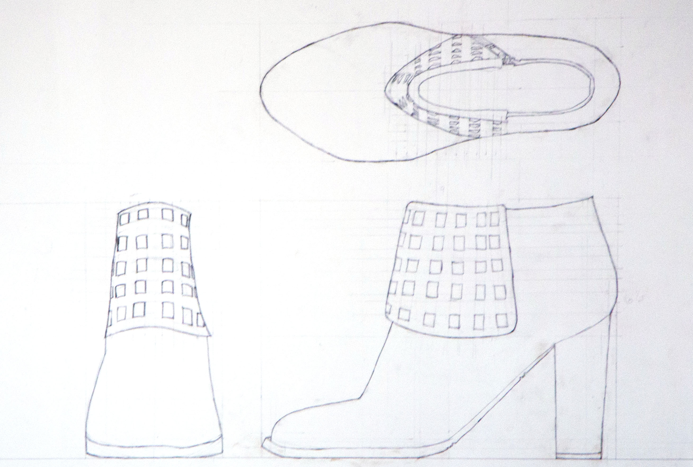
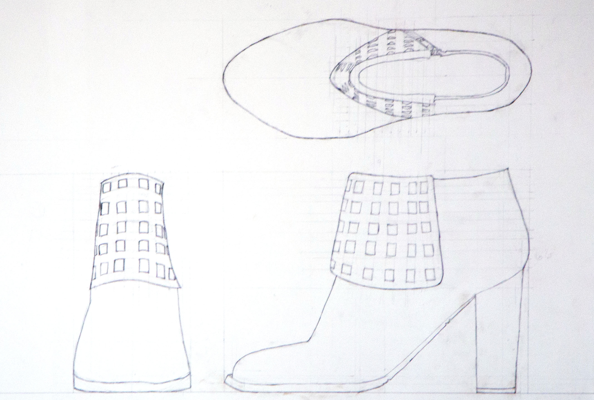
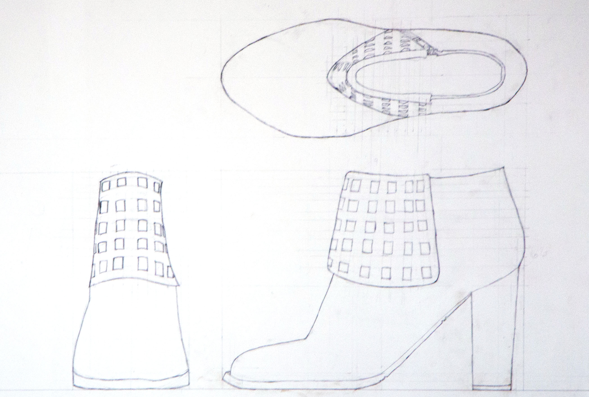

Irene Hernandez
Sculptures
Wire Shoe
2015
Dark Annealed Wire
6.25 in x 9.25 in

This project began with creating a technical drawing, then proceding to the construction of the shoe. The shoe was made with exact measurements of the original shoe. It was made with wire using different gauges.

 
